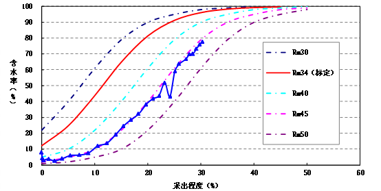

截止2016年12月底，石南油田共有采油井623口，开井581口，注水井164口，开井164口。年产原油144.21×104t，年产溶解气2.23×108m3。累计生产原油396.56×104t，累计生产溶解气5.90×108m3。原油可采储量采出程度19.85%，溶解气可采储量采出程度21.32%。累积试采天然气0.05×108m3，累积试采凝析油0.01×104t。
石南21井区头屯河组油藏标定采收率34%；② 低含水阶段含水上升率1.23在20%≤含水率<60%的中含水阶段含水上升率3.70%，在高含水期（60%≤fw<90%）阶段含水上升率为3.52%；③ 现阶段开发效果较好，预测最终采收率45%左右。
